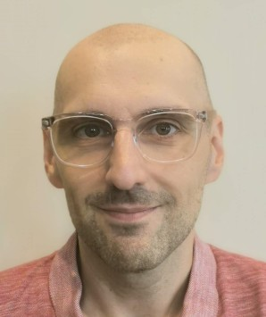

25 ans à transformer des besoins métier en applications fiables : de l'analyse fonctionnelle jusqu'à la mise en production, avec C#, .NET et SQL Server.

Analyste-développeur avec 25 ans d'expérience, je combine analyse fonctionnelle et développement d'applications métiers critiques. J'ai l'habitude de recueillir les besoins des utilisateurs, de les traduire en spécifications techniques et fonctionnelles, de coordonner des équipes de développement — y compris offshore — et d'accompagner les projets jusqu'aux tests et à la mise en production.
Solide expertise en C#, .NET, SQL Server et intégration de systèmes. Rigoureux, orienté qualité et amélioration continue, et curieux des outils d'IA au quotidien.
Je continue à me former pour suivre l'évolution de l'écosystème .NET.
Coordination avec une équipe de développement au Vietnam : analyse des besoins, spécifications base de données, répartition des tâches via Jira, tests et suivi.
Gestion d'applications critiques en production continue.
Gestion de données personnelles sensibles dans le respect du RGPD.
Documentation rigoureuse à des fins de conformité.
Modélisation, diagrammes de cas d'utilisation, de classes et de séquence.
Webservices.
Programmation (C, C++, Cobol, RPG, PHP), SQL, analyse, bases de données, réseaux.
Survolez ou touchez une carte
Je suis disponible rapidement pour un nouveau défi d'analyse fonctionnelle ou de développement .NET. Écrivez-moi sur LinkedIn : mon CV complet vous sera transmis sur simple demande.